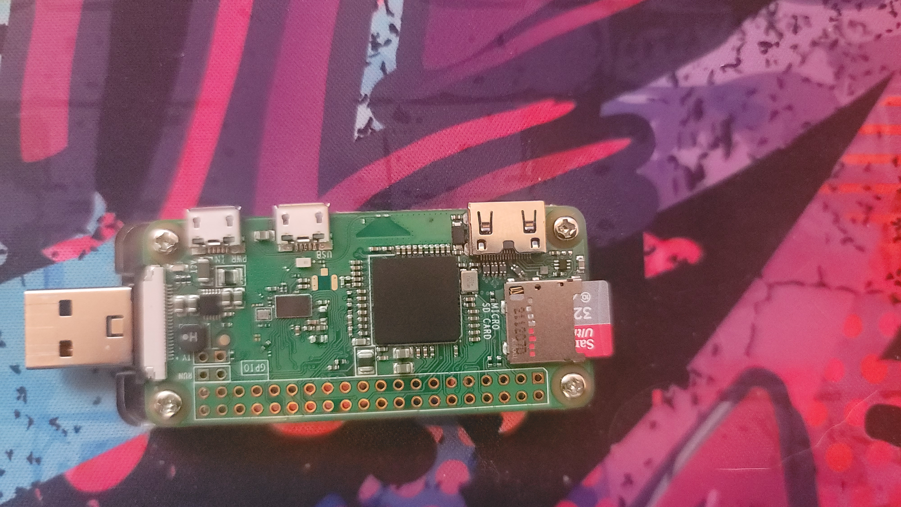

ALOA(A little offensive appliance)
About
- P4wnP1 A.L.O.A. by MaMe82 is a framework which turns a Rapsberry Pi Zero W into a flexible, low-cost platform for pentesting, red teaming and physical engagements ... or into "A Little Offensive Appliance".
- It's main super power is the ability To mimic an HID device AKA inject keystrokes and mouse movements into a computer.
- It's able to emulate a mass storage device. When used with the HID injection you are able to launch any number of exes you have preloaded onto the device.
- I can not overstate the power of HID injections, After opening a terminal on a computer you can do anything you want.
Requierments
- Raspberry Pi Zero W
- Micro SD card
- Micro USB to USB cable or Usb board for Pi.
- A computer to set up the Pi.
If you are intrested in buying a Raspberry-Pi 0W please use thisLink.
If you are intrested in buying a Raspberry-Pi 0W USB board please use thisLink.
Apache 2 web server on a Raspberry Pi W0
Process I followed:
- Set up a web server on a Raspberry Pi Zero W.
- Set up apache 2 as the web server software.
- Set up a static IP address for the Pi.
- Set up a domain name for the Pi.
- Set up port forwarding on my router.
- Set up a dynamic DNS service.
- (Optional)Set up a virtual host profile so that you can host more than one domain name with one ip.
- (Optional)Set up a SSL certificate for your sites.
Requierments
- Raspberry Pi Zero W
- Micro SD card
- Micro USB to USB cable or Usb board for Pi.
- A computer to set up the Pi.
This website is hosted on the Pi right now. This was a fun project and quick
to set up. I am looking forward to setting up a more complex web server in the
future. I know a bit of Node.js but it is Incompatible with Apache 2. I will
have to learn python or php to make the websites more complicated.
If you are
intressted in setting up a web server on a Pi follow this link to a guidepage.
If you are intrested in buying a Raspberry-Pi 0W please use this Link.
If you are intrested in buying a Raspberry-Pi 0W USB board please use this Link.
Drone Photography


A few years backas a hobby I decided I would buy a drone. It kept me busy and taught me a lot about photography. I was able to get some really cool shots. As a family we used to go camping atleast once a month. Enabling me to see a lot of really cool places and photograph them. I had a mavic mini so I was able to avoid registration and any training classes becuase of weight. There were also serval automated flight modes that made it easy to get great video with out even using the controller.